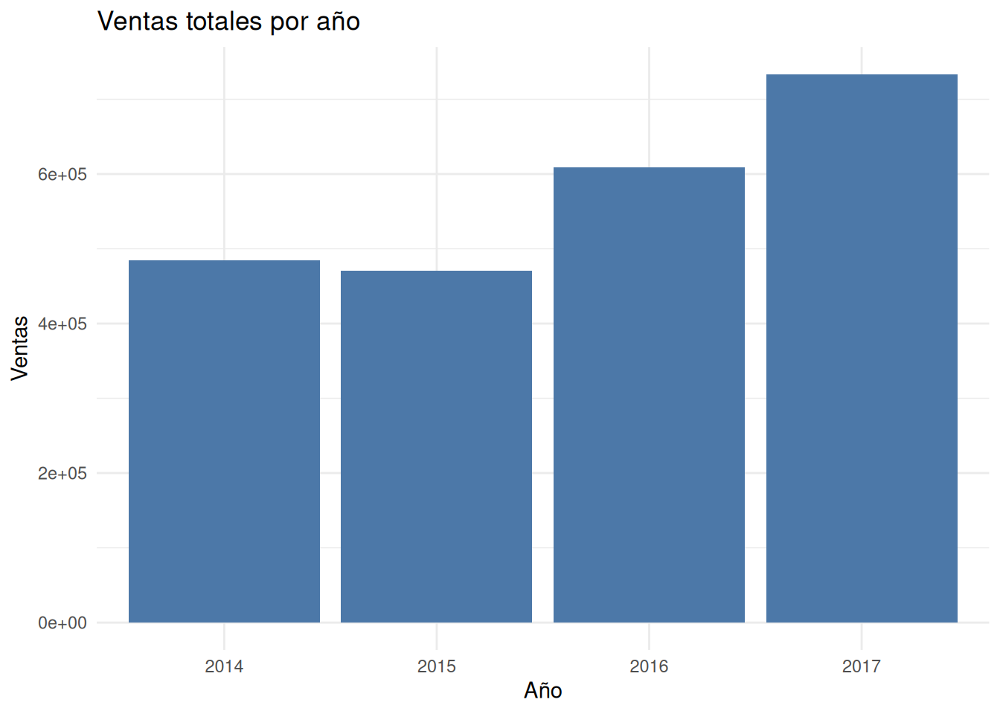

¿Qué patrones aparecen cuando observamos las ventas a lo largo del tiempo?
Retail
Forecasting
Exploramos la evolución temporal de las ventas de Superstore para identificar tendencias y posibles patrones estacionales antes de construir modelos de pronóstico.
La pregunta de negocio
Cuando pensamos en pronosticar las ventas de una empresa, la tentación suele ser construir inmediatamente un modelo predictivo. Sin embargo, un buen análisis comienza mucho antes.
Antes de intentar anticipar el futuro conviene comprender cómo se ha comportado el negocio hasta el momento.
Por ello, la pregunta que guía esta entrada es muy sencilla:
¿Existen tendencias o patrones estacionales visibles en las ventas antes de construir un modelo de pronóstico?
Responder esta pregunta aporta contexto para todas las decisiones posteriores.
Si las ventas muestran una tendencia creciente, los modelos futuros deberán ser capaces de representarla.
Si determinados meses concentran sistemáticamente mayores ventas, será necesario incorporar esa información al proceso de pronóstico.
En otras palabras, antes de construir modelos debemos entender el comportamiento del negocio.
En esta entrada utilizaremos el conjunto de datos Superstore Sales para explorar la evolución temporal de las ventas mediante herramientas de análisis exploratorio.
Todavía no construiremos modelos bayesianos.
Nuestro objetivo será desarrollar intuición sobre el comportamiento temporal de los datos y reconocer patrones que posteriormente servirán como punto de partida para la colección Anticipar el futuro.
Comprendiendo el problema
Imaginemos que trabajamos como analistas para una empresa nacional dedicada a la venta de artículos para oficina.
Cada pedido realizado por un cliente queda registrado junto con la fecha de compra, el importe de la venta y otras variables comerciales.
Después de varios años de operación la empresa dispone de miles de transacciones históricas.
La dirección desea responder una pregunta aparentemente sencilla:
¿Cómo han evolucionado las ventas a lo largo del tiempo?
Aunque podría calcularse únicamente el total vendido cada año, ese resumen oculta gran parte de la información.
Las ventas constituyen un proceso dinámico.
Pueden crecer lentamente durante varios años, disminuir temporalmente o presentar aumentos recurrentes durante determinadas épocas.
Visualizar esa evolución resulta mucho más útil que limitarse a observar cifras agregadas.
En esta exploración buscaremos tres tipos de comportamiento.
Tendencia
La tendencia describe la dirección general que siguen las ventas a largo plazo.
Nos interesa responder preguntas como:
- ¿el negocio parece crecer?;
- ¿permanece relativamente estable?;
- ¿se observan cambios importantes entre años?
Estacionalidad
Muchas empresas venden más durante determinados meses.
Campañas escolares, promociones comerciales o la temporada navideña pueden generar incrementos que se repiten regularmente.
Detectar estos patrones constituye uno de los primeros pasos antes de desarrollar modelos de pronóstico.
Variabilidad
Incluso cuando existe una tendencia general, las ventas rara vez evolucionan de forma completamente uniforme.
Parte de las fluctuaciones corresponden al comportamiento habitual del negocio y otra parte puede deberse a acontecimientos específicos.
Nuestro objetivo no consiste todavía en explicar esas diferencias, sino reconocer que existen.
Explorando los datos
El conjunto de datos registra cada pedido de manera individual.
Para estudiar la evolución temporal resulta más útil resumir las ventas por mes.
Una vez agregadas las ventas mensuales podemos observar con mayor claridad la evolución del negocio.
Una primera mirada a la serie temporal
La serie temporal revela inmediatamente varios aspectos interesantes.
En primer lugar, la trayectoria general parece creciente, especialmente durante los años 2016 y 2017.
Aunque las ventas fluctúan de un mes a otro, la tendencia de largo plazo sugiere que el negocio terminó vendiendo más al final del período analizado que al comienzo.
También se observan cambios notorios dentro de cada año.
Los primeros meses suelen presentar niveles de ventas relativamente bajos, mientras que hacia el final del año aparecen incrementos importantes acompañados de varios picos claramente visibles.
Lo más interesante es que este comportamiento parece repetirse de forma relativamente consistente entre los distintos años del conjunto de datos.
A simple vista, la evidencia resulta compatible con la existencia de un componente estacional, aunque todavía es pronto para afirmarlo con certeza.
Para comprender mejor esta evolución conviene separar ahora la información por años y estudiar cómo cambió el volumen total de ventas a lo largo del período analizado.
¿Cómo han evolucionado las ventas año tras año?
La serie temporal mostró una tendencia general de crecimiento, pero todavía no permite cuantificar cómo cambiaron las ventas entre un año y otro.
Para responder esa pregunta resumiremos primero las ventas anuales.
| Ventas totales por año | |
| Año | Ventas |
|---|---|
| 2014 | 484,247 |
| 2015 | 470,533 |
| 2016 | 609,206 |
| 2017 | 733,215 |
La tabla confirma que las ventas no crecieron de manera completamente lineal.
Durante 2015 las ventas disminuyeron ligeramente respecto a 2014. Sin embargo, esta reducción fue seguida por una recuperación importante durante 2016, mientras que 2017 registró el mayor volumen de ventas de todo el período analizado.
Este comportamiento resulta especialmente interesante porque recuerda que el crecimiento de un negocio rara vez ocurre en línea recta.
Incluso las empresas que presentan una trayectoria favorable pueden atravesar períodos temporales de desaceleración antes de retomar su crecimiento.
Visualizando la evolución anual

El gráfico facilita apreciar rápidamente el comportamiento observado en la tabla.
Aunque existe una pequeña disminución durante 2015, la tendencia general continúa siendo positiva.
Las ventas aumentan con claridad durante los dos últimos años, especialmente en 2017, lo que sugiere que el negocio terminó el período en una posición más sólida que al inicio.
Desde la perspectiva empresarial, estos cambios no parecen extraordinariamente bruscos.
Más bien reflejan una evolución razonablemente estable, compatible con un negocio que continúa creciendo, aunque no necesariamente al mismo ritmo todos los años.
Naturalmente, una evolución anual favorable no implica que todos los meses contribuyan por igual a ese crecimiento.
Para responder esa pregunta necesitamos estudiar cómo se distribuyen las ventas a lo largo del año.
¿Se repiten ciertos meses con mayores ventas?
Hasta ahora hemos observado el comportamiento global del negocio.
El siguiente paso consiste en averiguar si algunos meses concentran sistemáticamente una mayor actividad comercial.
| Ventas acumuladas por mes | |
| Mes | Ventas |
|---|---|
| Jan | 94,925 |
| Feb | 59,751 |
| Mar | 205,005 |
| Apr | 137,762 |
| May | 155,029 |
| Jun | 152,719 |
| Jul | 147,238 |
| Aug | 159,044 |
| Sep | 307,650 |
| Oct | 200,323 |
| Nov | 352,461 |
| Dec | 325,294 |
La tabla revela un patrón bastante claro.
Los meses de septiembre, noviembre y diciembre concentran los mayores niveles de ventas del conjunto de datos.
En particular, noviembre supera ligeramente las 350 000 unidades monetarias acumuladas durante los cuatro años analizados, convirtiéndose en el mejor mes del período.
En el extremo opuesto aparecen enero y febrero, cuyos niveles de ventas permanecen considerablemente por debajo del resto del año.
Este contraste constituye una primera evidencia de que el negocio no mantiene un volumen uniforme de ventas durante todo el año.
Aunque todavía no estamos construyendo modelos de pronóstico, estos resultados ya sugieren que la dimensión temporal desempeña un papel importante en el comportamiento comercial de la empresa.
Interpretando los resultados
Después de explorar la evolución temporal de las ventas, podemos responder con bastante confianza la pregunta que motivó este análisis.
La evidencia disponible sugiere que el negocio presenta una tendencia general de crecimiento, aunque dicho crecimiento no ha sido completamente uniforme.
La disminución observada durante 2015 demuestra que incluso las empresas con una trayectoria favorable pueden experimentar períodos temporales de desaceleración.
Sin embargo, la recuperación registrada durante 2016 y el fuerte incremento observado en 2017 indican que esa disminución no alteró la evolución positiva del negocio en el largo plazo.
Por otra parte, el análisis mensual mostró un patrón aún más interesante.
Las ventas no se distribuyen de forma homogénea durante el año.
Mientras enero y febrero representan los meses de menor actividad comercial, septiembre, noviembre y diciembre concentran una proporción considerablemente mayor de las ventas acumuladas.
Este comportamiento parece repetirse de manera relativamente consistente y resulta compatible con la existencia de un componente estacional.
No obstante, conviene interpretar esta conclusión con prudencia.
En esta entrada únicamente hemos realizado un análisis exploratorio.
Todavía no podemos afirmar que exista una estacionalidad en sentido estadístico ni estimar cómo influirá sobre las ventas futuras.
Responder esas preguntas requerirá construir modelos específicamente diseñados para el análisis de series temporales.
¿Qué incertidumbre permanece?
Aunque ahora comprendemos mucho mejor cómo se comportan las ventas, todavía existen varias preguntas abiertas.
Por ejemplo:
- ¿continuará la tendencia creciente durante los próximos años?;
- ¿los meses con mayores ventas seguirán siendo los mismos?;
- ¿la caída observada en 2015 fue un hecho aislado o podría repetirse?;
- ¿qué nivel de incertidumbre deberíamos esperar al realizar un pronóstico?
Estas preguntas recuerdan que un buen análisis exploratorio no elimina la incertidumbre.
Su principal función consiste en reducirla lo suficiente para formular mejores preguntas y construir modelos más adecuados.
Recomendaciones para el negocio
A partir de este análisis un equipo de Business Analytics podría proponer varias acciones concretas.
En primer lugar, los responsables de inventario podrían planificar con mayor anticipación los meses históricamente más fuertes, especialmente septiembre, noviembre y diciembre, con el objetivo de reducir el riesgo de quiebres de stock.
En segundo lugar, la disminución observada durante 2015 merece una revisión más detallada.
Aunque posteriormente las ventas se recuperaron, comprender las causas de ese descenso podría aportar información útil para prevenir situaciones similares en el futuro.
Finalmente, cualquier modelo de pronóstico que se construya posteriormente debería incorporar explícitamente la dimensión temporal.
Los resultados obtenidos muestran que el tiempo no constituye simplemente una variable adicional, sino un componente fundamental para comprender el comportamiento del negocio.
Reflexión bayesiana
En el enfoque bayesiano solemos pensar que aprender consiste en actualizar nuestro conocimiento a medida que incorporamos nueva evidencia.
Antes de intentar predecir el futuro, necesitamos comprender qué nos cuentan los datos sobre el pasado.
Eso es precisamente lo que hemos hecho en esta entrada.
Todavía no hemos construido modelos probabilísticos ni calculado distribuciones posteriores.
Sin embargo, ahora disponemos de una comprensión mucho más rica del contexto en el que trabajaremos.
Sabemos que el negocio muestra una tendencia general de crecimiento.
Sabemos que algunos meses concentran sistemáticamente mayores ventas.
Y, quizá lo más importante, sabemos que todavía existen incertidumbres que merecen ser estudiadas con herramientas más avanzadas.
En Business Analytics los modelos no sustituyen al razonamiento.
Lo complementan.
La exploración realizada en esta entrada constituye el primer paso de ese proceso.
Apéndice — Código completo
A continuación se presenta nuevamente todo el código utilizado durante el análisis.
Los bloques emplean #| eval: false para evitar una segunda ejecución durante el renderizado y facilitar que el lector pueda reutilizar el análisis completo.
Cargar librerías y datos
library(tidyverse)
library(lubridate)
library(gt)
superstore <- read_csv("superstore.csv")Preparación de las ventas mensuales
ventas_mensuales <-
superstore |>
mutate(
Order_Date = mdy(`Order Date`),
Year = year(Order_Date),
Month = month(Order_Date),
Mes = floor_date(Order_Date, "month")
) |>
group_by(Mes) |>
summarise(
Ventas = sum(Sales),
.groups = "drop"
)Serie temporal mensual
ggplot(
ventas_mensuales,
aes(
x = Mes,
y = Ventas
)
) +
geom_line(linewidth = 0.8) +
labs(
title = "Ventas mensuales",
x = NULL,
y = "Ventas"
) +
theme_minimal()Ventas por año
ventas_anuales <-
superstore |>
mutate(
Order_Date = mdy(`Order Date`),
Year = year(Order_Date)
) |>
group_by(Year) |>
summarise(
Ventas = sum(Sales),
.groups = "drop"
)
ventas_anuales |>
gt()Gráfico de ventas por año
ggplot(
ventas_anuales,
aes(
x = factor(Year),
y = Ventas
)
) +
geom_col(fill = "#4C78A8") +
theme_minimal()Ventas por mes
ventas_mes <-
superstore |>
mutate(
Order_Date = mdy(`Order Date`),
Mes = month(
Order_Date,
label = TRUE,
abbr = TRUE
)
) |>
group_by(Mes) |>
summarise(
Ventas = sum(Sales),
.groups = "drop"
)
ventas_mes |>
gt()Próxima entrada
En esta publicación nos limitamos a comprender cómo han evolucionado históricamente las ventas.
Ahora conocemos mejor la tendencia general del negocio y hemos identificado indicios compatibles con un comportamiento estacional.
La siguiente pregunta surge de manera natural:
¿Cómo podemos utilizar estos patrones para construir un pronóstico probabilístico de las ventas?
Esa será precisamente la puerta de entrada a la colección Anticipar el futuro, donde comenzaremos a utilizar modelos bayesianos para cuantificar la incertidumbre y generar predicciones que apoyen la toma de decisiones.